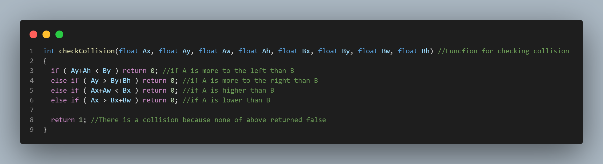

Si tratta di un gioco arcade publicato nel 1986,il cui scopo consiste nel colpire il maggior numero di
blocchi al di sopra del giocatore tramite una pallina in movimento.
Questa replica è stata realizzata come esercizio in collaborazione con un mio compagno di corso.
Il mio ruolo è stato curare il gameplay, cioè la logica dietro la creazione dei blocchi
colorati nella parte superiore dello schermo, il giocatore,
ovvero il rettangolo in basso, e i movimenti della pallina, con i suoi vari rimbalzi
e la consecutiva distruzione dei blocchi.
Un altro aspetto che ho curato è l'eventuale game over che appare in caso
il giocatore non riesca a prendere la palla e che determina la fine della partita.
Questo particolare esercizio è un mio personale preferito tra i vari progetti eseguiti
durante i tre anni ad AIV, grazie all' enorme quantitativo di esperienza che ha accompagnato
la sua creazione.
In primis è stato il mio primo progetto non in solitaria portando con sè i primi apprendimenti,
in seguito consolidati, su come gestire le varie problematiche tipiche del lavoro in gruppo
(come gestione delle task, rispettare delle deadlines, tamponare e risolvere eventuali problemi che
nascono in questo tipo di situazioni,...).
Un'altra skill di cui faccio tesoro da questo progetto è l'abilità di pensiero critico che mi
permette di ricreare un videogioco solo dopo l'osservazione durante l'averlo giocato grazie
un focus sul dettaglio, applicabile a qualsiasi altro contesto.
La parte che però mi ha interessato e stimolato maggiormente è l'effettiva creazione delle interazioni
tra giocatore, pallina e blocchi da distruggere.
Di seguito sono mostrati alcuni script contenenti gli algoritmi per le principali funzionalità del gioco.
Logica delle collisioni della pallina:
Struct che dà la base ai blocchi da dover distruggere:
Algoritmo che monitora le collisioni avvenute:
Algoritmo per la collisione e conseguente distruzione dei blocchi: